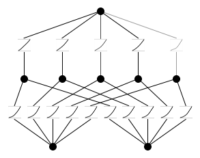
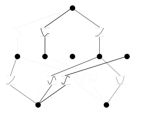
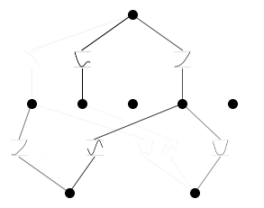
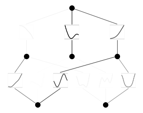
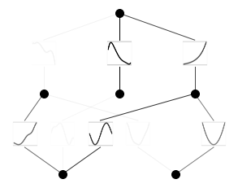

from kan import *
# create a KAN: 2D inputs, 1D output, and 5 hidden neurons. cubic spline (k=3), 5 grid intervals (grid=5).
model = KAN(width=[2,5,1], grid=5, k=3, seed=0)ref: https://github.com/KindXiaoming/pykan?tab=readme-ov-file
Hello, KAN!
Kolmogorov-Arnold representation theorem
Kolmogorov-Arnold representation theorem states that if \(f\) is a multivariate continuous function on a bounded domain, then it can be written as a finite composition of continuous functions of a single variable and the binary operation of addition. More specifically, for a smooth \(f : [0,1]^n \to \mathbb{R}\),
\[f(x) = f(x_1,...,x_n)=\sum_{q=1}^{2n+1}\Phi_q(\sum_{p=1}^n \phi_{q,p}(x_p))\]
where \(\phi_{q,p}:[0,1]\to\mathbb{R}\) and \(\Phi_q:\mathbb{R}\to\mathbb{R}\). In a sense, they showed that the only true multivariate function is addition, since every other function can be written using univariate functions and sum. However, this 2-Layer width-\((2n+1)\) Kolmogorov-Arnold representation may not be smooth due to its limited expressive power. We augment its expressive power by generalizing it to arbitrary depths and widths.
Kolmogorov-Arnold Network (KAN)
The Kolmogorov-Arnold representation can be written in matrix form
\[f(x)={\bf \Phi}_{\rm out}\circ{\bf \Phi}_{\rm in}\circ {\bf x}\]
where
\[{\bf \Phi}_{\rm in}= \begin{pmatrix} \phi_{1,1}(\cdot) & \cdots & \phi_{1,n}(\cdot) \\ \vdots & & \vdots \\ \phi_{2n+1,1}(\cdot) & \cdots & \phi_{2n+1,n}(\cdot) \end{pmatrix},\quad {\bf \Phi}_{\rm out}=\begin{pmatrix} \Phi_1(\cdot) & \cdots & \Phi_{2n+1}(\cdot)\end{pmatrix}\]
We notice that both \({\bf \Phi}_{\rm in}\) and \({\bf \Phi}_{\rm out}\) are special cases of the following function matrix \({\bf \Phi}\) (with \(n_{\rm in}\) inputs, and \(n_{\rm out}\) outputs), we call a Kolmogorov-Arnold layer:
\[{\bf \Phi}= \begin{pmatrix} \phi_{1,1}(\cdot) & \cdots & \phi_{1,n_{\rm in}}(\cdot) \\ \vdots & & \vdots \\ \phi_{n_{\rm out},1}(\cdot) & \cdots & \phi_{n_{\rm out},n_{\rm in}}(\cdot) \end{pmatrix}\]
\({\bf \Phi}_{\rm in}\) corresponds to \(n_{\rm in}=n, n_{\rm out}=2n+1\), and \({\bf \Phi}_{\rm out}\) corresponds to \(n_{\rm in}=2n+1, n_{\rm out}=1\).
After defining the layer, we can construct a Kolmogorov-Arnold network simply by stacking layers! Let’s say we have \(L\) layers, with the \(l^{\rm th}\) layer \({\bf \Phi}_l\) have shape \((n_{l+1}, n_{l})\). Then the whole network is
\[{\rm KAN}({\bf x})={\bf \Phi}_{L-1}\circ\cdots \circ{\bf \Phi}_1\circ{\bf \Phi}_0\circ {\bf x}\]
In constrast, a Multi-Layer Perceptron is interleaved by linear layers \({\bf W}_l\) and nonlinearities \(\sigma\):
\[{\rm MLP}({\bf x})={\bf W}_{L-1}\circ\sigma\circ\cdots\circ {\bf W}_1\circ\sigma\circ {\bf W}_0\circ {\bf x}\]
A KAN can be easily visualized. (1) A KAN is simply stack of KAN layers. (2) Each KAN layer can be visualized as a fully-connected layer, with a 1D function placed on each edge. Let’s see an example below.
Get started with KANs
Initialize KAN
Create dataset
# create dataset f(x,y) = exp(sin(pi*x)+y^2)
f = lambda x: torch.exp(torch.sin(torch.pi*x[:,[0]]) + x[:,[1]]**2)
dataset = create_dataset(f, n_var=2)
dataset['train_input'].shape, dataset['train_label'].shape(torch.Size([1000, 2]), torch.Size([1000, 1]))Plot KAN at initialization
# plot KAN at initialization
model(dataset['train_input']);
model.plot(beta=100)
Train KAN with sparsity regularization
# train the model
model.train(dataset, opt="LBFGS", steps=20, lamb=0.01, lamb_entropy=10.);train loss: 1.33e-01 | test loss: 1.38e-01 | reg: 2.67e+01 : 100%|██| 20/20 [00:04<00:00, 4.04it/s]Plot trained KAN
model.plot()
Prune KAN and replot (keep the original shape)
model.prune()
model.plot(mask=True)
Prune KAN and replot (get a smaller shape)
model = model.prune()
model(dataset['train_input'])
model.plot()
Continue training and replot
model.train(dataset, opt="LBFGS", steps=50);train loss: 1.98e-03 | test loss: 2.06e-03 | reg: 1.33e+01 : 100%|██| 50/50 [00:08<00:00, 5.75it/s]model.plot()
Automatically or manually set activation functions to be symbolic
mode = "auto" # "manual"
if mode == "manual":
# manual mode
model.fix_symbolic(0,0,0,'sin');
model.fix_symbolic(0,1,0,'x^2');
model.fix_symbolic(1,0,0,'exp');
elif mode == "auto":
# automatic mode
lib = ['x','x^2','x^3','x^4','exp','log','sqrt','tanh','sin','abs']
model.auto_symbolic(lib=lib)fixing (0,0,0) with sin, r2=0.9842764139175415
fixing (0,0,1) with sin, r2=0.9388346076011658
fixing (0,0,2) with sin, r2=0.9999294877052307
fixing (0,1,0) with sin, r2=0.9892179369926453
fixing (0,1,1) with x^4, r2=0.7073873281478882
fixing (0,1,2) with x^2, r2=0.9999879002571106
fixing (1,0,0) with tanh, r2=0.9250213503837585
fixing (1,1,0) with abs, r2=0.9714484810829163
fixing (1,2,0) with exp, r2=0.999997079372406Continue training to almost machine precision
model.train(dataset, opt="LBFGS", steps=50);train loss: 7.10e-03 | test loss: 6.93e-03 | reg: 1.47e+01 : 100%|██| 50/50 [00:02<00:00, 24.17it/s]Obtain the symbolic formula
model.symbolic_formula()[0][0]\(\displaystyle 0.99 e^{1.01 x_{2}^{2} + 1.0 \sin{\left(3.13 x_{1} \right)}} - 0.03 \tanh{\left(5.56 \sin{\left(1.07 x_{1} - 0.75 \right)} - 0.6 \sin{\left(1.6 x_{2} + 1.58 \right)} + 2.63 \right)} + 0.2 \left|{0.01 \left(0.02 - x_{2}\right)^{4} - 0.23 \sin{\left(2.95 x_{1} - 9.8 \right)} + 0.17}\right| - 0.03\)